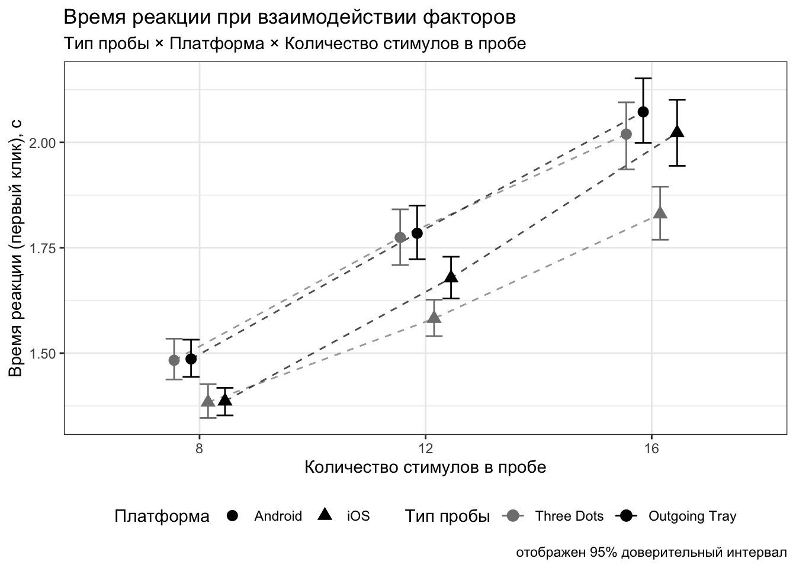
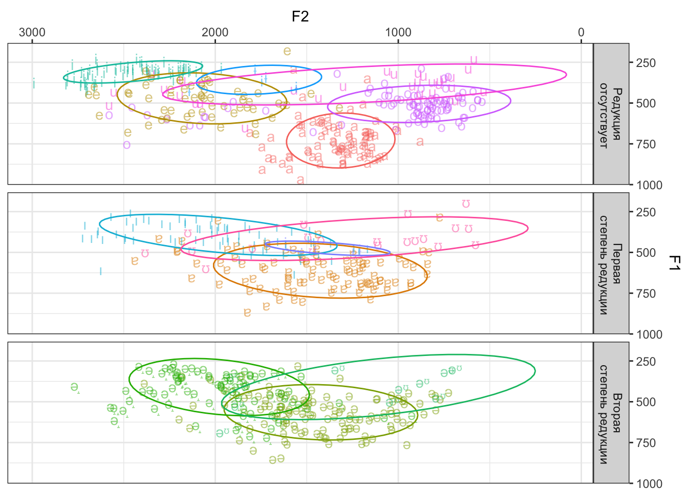

HW5 // Визуализация данных
Основные задания
В данной домашке вам предлагается повторить представленную ниже визуализацию. Данные расположены здесь — это тот самый поведенческий эксперимент, с которым мы знакомились на четвертой практике.
В исследовании изучался зрительный поиск иконок различных платформ смартфонов. Испытуемым надо было искать иконки поделиться (share) iOS и Android среди дисктракторов — других иконок, которые для обеих платформ отрисованы одинаково. Целевой стимул мог быть один — два условия: иконка iOS (Outgoing Tray,
tray) и иконка Android (Three Dots,dots) — или их могло быть два — и тот, и другой. Дополнительно варьировалось количество стимулов в пробе — 8, 12, 16. Фиксировалось время поиска целевого стимула (время реакции) — от начала пробы до клика испытуемого — а также координаты клика для вычисления точности поиска. Дополнительно были записаны данные об используемой платформе смартфона — iOS или Android.
Переменные в датасете:
id— идентификатор испытуемогоtrialtype— тип пробы (dots/tray/both)setsize— количество стимулов в пробе (8/12/16)platform— платформа, которой пользуется испытуемый (ios/android)time1— время первого клика, сtime2— время второго клика, сcorrect1— является ли первый клик вернымcorrect2— является ли второй клик верным
Есть два варианта выполнения данной домашки:
- Если вы хорошо разобрались в
ggplot2, то можете просто повторить визуализацию без опоры на задания.- Только посмотрите в конце задание 10 — надо экспортировать получившийся график.
- Если вы чувствуете, что ещё не очень уверенный пользователь
ggplot2, то в заданиях поэтапно идёт движение с самого начала до итоговой визуализации.
Вид графика, который должен получиться в итоге вот:

#1
- Загрузите данные.
- Постройте базовую визуализацию, на которой будет отображено среднее время первого клика в условиях с разным количеством стимулов. Количество стимулов считайте категориальной переменной.
Описание формата инпута.
Подсказки
Ошибка при чтении файла
Файл с данными содержит нетипичные разделители — как между колонками данных, так и десятичный разделитель. Чтобы корректно прочитать файл, используйте read_delim().
Категориальный setsize
Обратите внимание на то, как распознается переменная setsize функцией чтения данных. Возможно, нужно что-то типа as_factor().
#2
Добавьте на визуализацию группировку наблюдений по типу пробы с помощью цвета и группировку по платформа с помощью формы точек. Из типа пробы в визуализации должны присутствовать только
trayиdots.Добавьте на визуализацию доверительные интервалы для каждого из рассчитанных средних. Средните с доверительными интервалами не должны располагаться на одной вертикальной линии — немного разнесите их вправо-влево.
Описание формата инпута.
Подсказки
Как убрать одно экспериментальное условие?
Отфильтруйте из датасета лишние пробы.
Как отодвинуть друг от друга средние с доверительными интервалами?
position_dodge()
Ошибка undefined column selected
Проверьте, когда вы используете fun, а когда fun.data внтури stat_summary().
#3
Соедините точки, соответствующие одной группе в сочетании переменных trialtype и platform линиями.
Описание формата инпута.
Подсказки
Линий нет ((
Проверье, указали на вы ggplotу, какие именно точки надо соединить — что считать одной группой точек, которые должны быть соединены линией.
Линии существуют отдельно от точек ((
Проверьте, указали ли вы, что линии надо раздвинуть так же, как и средние с доверительными инетрвалами.
#4
Немного настройте график:
- увеличьте размер точек до 3, чтобы они были лучше видны
- сделайте линии прерывистыми, чтобы они меньше отвлекали внимание от точек
- задайте линиям прозрачность в 30%, чтобы они еще меньше отвлекали внимание от точек
Описание формата инпута.
Подсказки
Прерывистая линия это какая?
dashed
Слишком прозравные линии получаются
Аргумент alpha задает непрозрачность. В задании же указано, насколько должна быть прозрачной линия.
#5
Ещё немного настройте график: задайте ширину усов доверительных интервалов в 30%.
Описание формата инпута.
Подсказки
Как делать задание?
Что надо сделать?
Ответ неверный
#6
Задайте соответствующие подписи осей и легенды графика:
- ось \(x\) — Количество стимулов в пробе
- ось \(y\) — Время реакции (первый клик), с
- цвет — Тип пробы
- форма точек — Платформа
Описание формата инпута.
Подсказки
Как делать задание?
Что надо сделать?
Ответ неверный
#7
Добавьте на график заголовок, подзаголовок и подпись.
- заголовок — Время реакции при взаимодействии факторов
- подзаголовок — Тип пробы × Платформа × Количество стимулов в пробе
- подпись — отображен 95% доверительный интервал
Описание формата инпута.
Подсказки
Как делать задание?
Что надо сделать?
Ответ неверный
#8
- Измените палитру используемых цветов на черно-белую —
blackиgray50. - Задайте значения подписей легенды:
- платформы должны быть подписаны
iOSиAndroidсоответственно - тип пробы
Three DotsиOutgoing Trayсоответственно
- платформы должны быть подписаны
Описание формата инпута.
Подсказки
Как кастомизировать шкалы?
scale_color_..() или scale_shape_..()
Как задать соответствие между новыми подписями и исходными значениями?
С помощью именованного вектора
#9
Последние штрихи:
- Расположите легенду под визуалиацией.
- Задайте черно-белую тему графику, чтобы убрать серый фон.
Подсказки
Как делать задание?
Что надо сделать?
Ответ неверный
#10
Экспортируйте график в формате JPEG (размер — 20×18 см) в разрешении, подходящем для печати.
Описание формата инпута.
Подсказки
Как делать задание?
Что надо сделать?
Ответ неверный
Дополнительные задания
#1
Пришла рецензия на статью, где был опубликован график, который вы сделали в основной части домашки. У рецензента нет никаких замечаний, кроме одного — он желает, что шрифт на графике был с засечками (Times New Roman), а название графика было выделено жирным начертанием.
Что ж… Сделаем.
- Задайте Times New Roman в качестве шрифта для текста на графике.
- Задайте полужирное начертание для заголовка графика.
Описание формата инпута.
Подсказки
Как делать задание?
Что надо сделать?
Ответ неверный
#2
Пошалим!
По ссылке вы найдете часть данных апробации опросника на доверие к искусственному интеллекту (Trust in Artшficial Intelligent Agents Scale). Это уже агрегированные данные — в них три столбца:
id— идентификатор респондентаsubscale— субшкала опросникаsubscale_score— балл по данной субшкале
Построим профили для первых пяти респондентов.
- Профиль должен быть отображен в виде столбчатой диаграммы
- Над каждым столбиком должен быть подписан балл респондента по шкале
- Столбики должны различаться по цветам, однако легенда должна быть скрыта, чтобы не дублировать отображение переменной на оси
- Каждый профиль должен быть отображен на отдельном подграфике
Пример визуализации представлен ниже.
Описание формата инпута.
Подсказка
geom_label()
guides()
#3
На основе графика из предыдущего задания постройте визуализацию профилей респондентов 22, 23 и 24 и форме лучевой диаграммы.
Пример графика представлен ниже.
Описание формата инпута.
Подсказка
coord_polar()
theme(axis.title.x = element_text(...),
axis.text.x = element_text(...))#4
Помимо знакомых нам форматов JPEG и PNG, которые являются растровыми, есть еще векторные форматы, которые позволяют масштабировать. Один из них SVG. Ему не важно, какого размера и какого разрешения вы хотите экспортировать картинку — её можно будет растянуть до любого размера.
Экспортируйте получившийся в предыдущем задании график с формате SVG.
Скорее всего, понадобится установить пакет svglite.
Описание формата инпута.
Подсказки
Как делать задание?
Что надо сделать?
Ответ неверный
#5
Напоследок нарисуем что-то невероятное — а именно, вокалическое пространство русского языка!
В двух словах: гласные звуки характеризуются двумя частотными характеристиками, которые называются форманты. Они задают координаты вокалического пространства. Расположение конкретных звуков на этих координатах и будет являться визуализацией вокалического пространства.
В датасете собраны различные харакретистики гласных звуков русского языка из произнесений разных слов. Нас будут интересовать прежде всего две характеристики:
f1— первая форманта, которая будет задавать вертикальную ось вокалического пространстваf2— вторая форманта, которая будет задавать горизонтальную ось вокалического пространства
Кроме этих двух переменных нам также понадобятся:
phoneme— обозначение фонемыreduction— степень редукции
Визуализируйте вокалическое пространство русского языка как показано на рисунке ниже. Обратите внимание на направление осей. Эллипсы отображают 80% доверительную зону для пары срених значений первой и второй формант.

Описание формата инпута.
Подсказки
- Чтобы задать новые подписи для фасетов, воспользуйтесь аргументом
labellerфункцииfacet_..(), в который необходимо передать результат работы функцииlabeller(). - Чтобы обозначить перенос строки, используйте символ
\n. - Чтобы отобразить доверительные зоны для пар средних значений, есть функция
stat_ellipse()с аргументомlevel.